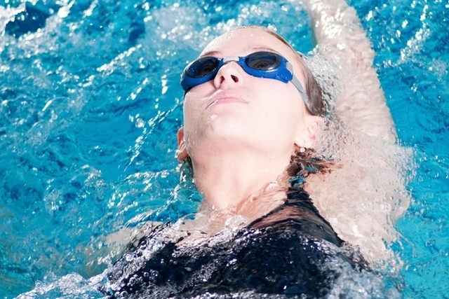

Principais benefícios da natação
A natação é um esporte que melhora a força, tonifica os músculos e trabalha todo o corpo, estimula as articulações e ligamentos e ajuda no controle de peso e na queima da gordura.
A natação é um esporte aeróbico indicado para todas as idades, idosos, grávidas ou bebês, por ser um tipo de atividade física com poucos riscos e impacto para o ossos.
Saiba mais sobre a natação para bebês em 7 boas razões para colocar o bebê na Natação.
Existem diferentes estilos e modalidades de natação que podem ser praticados: crawl, costas, peito e borboleta, no entanto, nas primeiras aulas é normal que o professor ensine coisas muito básicas, como aprender a perder o medo da água e a saber flutuar, por exemplo.
Aos poucos, a pessoa vai aprendendo alguns exercícios e técnicas que o ajudarão a nadar corretamente.
Assim, é recomendado ter aulas de natação de 2 a 3 vezes por semana, de 30 a 50 minutos de cada vez.
5 Beneficios da natação
A natação apresenta inúmeros benefícios para a saúde, dentre os quais podemos citar:
1. trabalha todo o corpo
A natação é um esporte muito completo, que trabalha a maior parte dos músculos do corpo, ao contrário do que acontece na musculação, por exemplo, onde os exercícios são realizados de forma mais localizada.
Além disso, este esporte aumenta a flexibilidade muscular, sendo por isso a atividade física recomendado pelos médicos para ajudar na recuperação de lesões ou durante o período de recuperação após cirurgias.
2. Fortalece as articulações e ligamentos
Este esporte ajuda a manter as articulações e ligamentos exercitados e saudáveis, melhorando também a flexibilidade e a postura do corpo.
Além disso, este é um esporte adequado para todas as idades por ser um esporte de baixo impacto pois a água amortece os impactos, sendo especialmente indicado para idades mais avançadas onde o risco de lesões é maior.
3. Ajuda a emagrecer e queimar gordura
Como este é um esporte feito dentro de água, os músculos são forçados a exercer um maior esforço, o que acaba por aumentar o gasto de calorias.
Mas assim como todo o esporte, o gasto calórico da natação depende da intensidade dos exercícios e o emagrecimento, da sua associação a uma alimentação saudável, equilibrada e pobre em calorias.
4. Combate o estresse e melhora a memória
A prática da natação promove o prazer e o bem-estar, uma vez que a prática de exercício melhora a satisfação e o humor.
Além disso, como melhora também a circulação sanguínea e a oxigenação do sangue, acabando por melhorar a memória e a capacidade de raciocínio.
5. Melhora a respiração
A natação é um esporte com grande exigência respiratória, que melhora muito a respiração e a capacidade aeróbica.
Com a natação, existe um maior fortalecimento dos músculos da parede torácica, o que permite uma melhor contração e expansão do pulmão, permitindo aos pulmões oxigenar melhor o sangue.